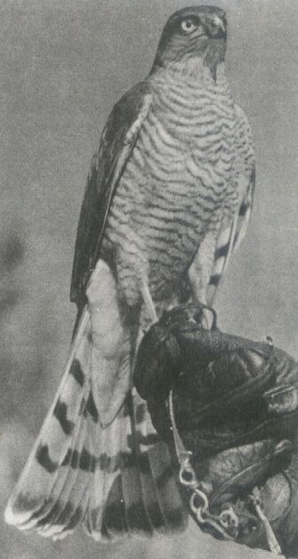

JASTRZĘBIARSTWO
W Polsce występują tylko dwa gatunki: jastrząb i krogulec. W ubarwieniu i proporcjach ciała mają one wiele cech wspólnych i można by powiedzieć, że jastrząb jest jak gdyby dużym, a krogulec małym wydaniem tego samego ptaka. Jednak tak bardzo różnią się od sokołów sposobem łowów, że myśliwi polowania z nimi przeciwstawiają sokolnictwu i nazywają jastrzębiarstwem. W Polsce łowy z jastrzębiami powszechnie uprawiano od dawna.
JASTRZĄB GOŁĘBIARZ
Uważa się, że ptaki te przewyższają sokoły pod wieloma względami swą szczególną pojętnością, śmiałością oraz zręcznością. Podczas gdy sokoły po kilku godzinach polowania i po złowieniu kilku ptaków tracą ochotę do dalszych łowów, jastrzębie, nie znużone mogą w dalszym ciągu uprzyjemiać myśliwemu rozrywke. Jeśli jednak mniej zna się je jako ptaki myśliwskie, wynikało to z tego, że ich dzika natura wymaga do ułożenia dobrego nauczyciela. Niemniej jednak ptaki te ceni się wysoko w sokolnictwie. Dorównuje sokołom, jako drapieżca uniwersalny, łowiąc zdobycz wszędzie, zarówno w powietrzu jak i na lądzie, zarówno w gęstych krzakach jak i na wodzie. Wyróżnia się impetycznością ataku, umiejętnym podkradaniem się pod ofiarę, odwagą. Pomimo swej wagi (samce około 760 g, samice 1300 g) używa się ich nawet do polowania na czaple, dzikie gęsi, cietrzewie, bażanty, kaczki, a z mniejszych ptaków na jarząbki i kuropatwy. Ze zwierzyny naziemnej bije się nim głównie zające i dzikie króliki. Oczywiście ptak ten musi być dobrze karmiony, utrzymany w doskonałej kondycji, posiadać silnie umięśnioną klatkę piersiową. Jastrząb o ostrej piersi, zagłodzony nie ma chęci i siły do latania, jest apetyczny i zdolny do atakowania wyłączniej słabej zwierzyny. Prawdziwy jastrzębnik brzydzi się takim ptakiem i nigdy nadmiernym głodzeniem do takiego stanu nie doprowadza.
KROGULEC
Zwany ptasznikiem, dawniej powszechnie używany i bardzo ceniony. Wykożystywało się go podczas polowania prawie tak często jak sokoła, a łowy z nim na kuropatwy należały do największych przyjemności. Niemniej piękne były łowy na małe ptaszki, wielkości wróbla do gołębia. Przeważnie używa się samic krogulców, które są niekiedy dwa razy cięższe i większe od samców. Jego szybki start i sprawny lot pozwala na polowanie prosto z rękawicy. Wedłóg mnie jest to doskonały ptak łowczy umilający każde wyjście w pole.
ORŁY W SOKOLNICTWIE
W Polsce łowe z orłami należą do rzadkości i są raczej nie spotykane obecnie jak i dawniej. W zachodniej Europie, orłami poluje się również bardzo rzadko.
Natomiast u ludów wschodnich były oraz są dotychczas stosowane do pościgu i łowienia dużych zwierząt na bezkresnych stepach Azji. Kirgizi chwytają nimi wilki stepowe, które dostarczają później do ogrodów zoologicznych. Podczas dosiadu wilka orzeł chwyta zwierza szponami za nozdrza oraz szczękę i tym sposobem obezwładnia i paraliżuje go.
PRZEDNI wykorzystywany jest właśnie do takiego typu polowań. Osiąga on długość około 80 cm, przy czym siąg jego skrzydeł wynosi 2 metry, a waga 4,5 kg. Na łowy jeźdźcy wiozą go na berle. Wśród zwierzyny na którą układają orła, obok wspomianych wilków wymienia się lisy, sarny, suhaki i zające, z ptaków łabędzie, dzikie gęsi i kaczki. Układać do łowów można wyłącznie młode ptaki.
WŁOCHATY zwany małym. Jest znacznie mniejszy od orła przedniego, a wagą nie dorównujący nawet sokołowi białozorowi. Używany jest bardzo rzadko, niemniwj jednak należy o nim wspomnieć.
BIELIK jest największym, choć używanym rzadko, do polowań. Wzrostem przewyższa orła przedniego ( waga jego wynosi nieraz ponad 5 kg ), różni się też od tamtego wieloma cechami morfologicznymi. Młode ptaki oswajają się łatwo i przywiązują do człowieka. Latają przeważnie wolno, krążąc, rzadko przy tym poruszają skrzydłami, wykorzystując siłę witru bardziej niż siłę mięśni. W sposobie lotu przypominają sępy, stąd niekiedy sokolnicy nazywają je sępami. Poluje się nimi na zwierzynę tą samą co orłem przednim.
Ptaki drapieżne stosowane do celów łowieckich
W Polsce występują tylko dwa gatunki: jastrząb i krogulec. W ubarwieniu i proporcjach ciała mają one wiele cech wspólnych i można by powiedzieć, że jastrząb jest jak gdyby dużym, a krogulec małym wydaniem tego samego ptaka. Jednak tak bardzo różnią się od sokołów sposobem łowów, że myśliwi polowania z nimi przeciwstawiają sokolnictwu i nazywają jastrzębiarstwem. W Polsce łowy z jastrzębiami powszechnie uprawiano od dawna.
JASTRZĄB GOŁĘBIARZ
KROGULEC

W Polsce łowe z orłami należą do rzadkości i są raczej nie spotykane obecnie jak i dawniej. W zachodniej Europie, orłami poluje się również bardzo rzadko.
Natomiast u ludów wschodnich były oraz są dotychczas stosowane do pościgu i łowienia dużych zwierząt na bezkresnych stepach Azji. Kirgizi chwytają nimi wilki stepowe, które dostarczają później do ogrodów zoologicznych. Podczas dosiadu wilka orzeł chwyta zwierza szponami za nozdrza oraz szczękę i tym sposobem obezwładnia i paraliżuje go.
PRZEDNI wykorzystywany jest właśnie do takiego typu polowań. Osiąga on długość około 80 cm, przy czym siąg jego skrzydeł wynosi 2 metry, a waga 4,5 kg. Na łowy jeźdźcy wiozą go na berle. Wśród zwierzyny na którą układają orła, obok wspomianych wilków wymienia się lisy, sarny, suhaki i zające, z ptaków łabędzie, dzikie gęsi i kaczki. Układać do łowów można wyłącznie młode ptaki.
WŁOCHATY zwany małym. Jest znacznie mniejszy od orła przedniego, a wagą nie dorównujący nawet sokołowi białozorowi. Używany jest bardzo rzadko, niemniwj jednak należy o nim wspomnieć.
BIELIK jest największym, choć używanym rzadko, do polowań. Wzrostem przewyższa orła przedniego ( waga jego wynosi nieraz ponad 5 kg ), różni się też od tamtego wieloma cechami morfologicznymi. Młode ptaki oswajają się łatwo i przywiązują do człowieka. Latają przeważnie wolno, krążąc, rzadko przy tym poruszają skrzydłami, wykorzystując siłę witru bardziej niż siłę mięśni. W sposobie lotu przypominają sępy, stąd niekiedy sokolnicy nazywają je sępami. Poluje się nimi na zwierzynę tą samą co orłem przednim.